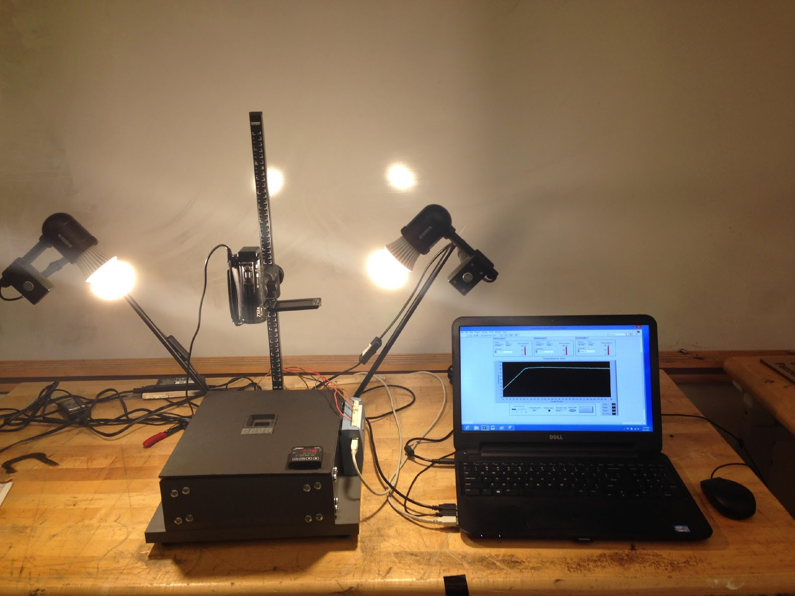

The objective of this project is to create an improved method of calibrating Thermochromic Liquid Crystal (TLC) sheets. As the temperature of these liquid crystals is varied across a specific range, the light reflected displays colors along the full visible spectrum. By determining the temperature of the sheet and matching it with the hue of the corresponding color, it is possible to use these sheets to quantitatively measure temperature. By performing a calibration on a small sample, the temperature to hue relationship can be established for an entire lot. The calibration system, consisting of camera stand, polyurethane insulation, a copper conductive medium, Kapton heater, thermocouples, LED lights, camcorder, PID controller, USB DAQ, and laptop is designed to minimize human error, remain low-cost, and be self-contained and readily portable.
